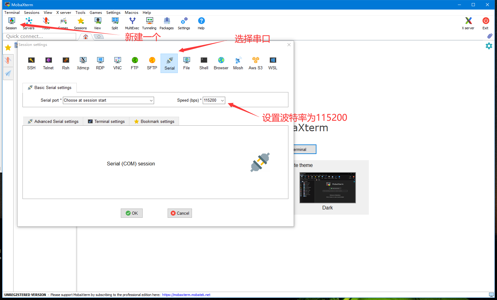
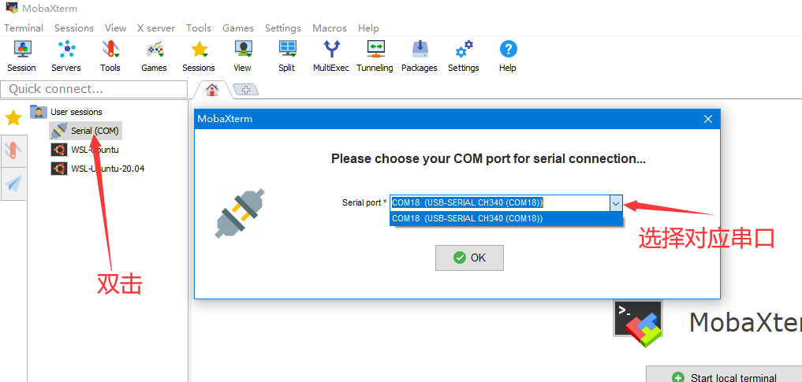
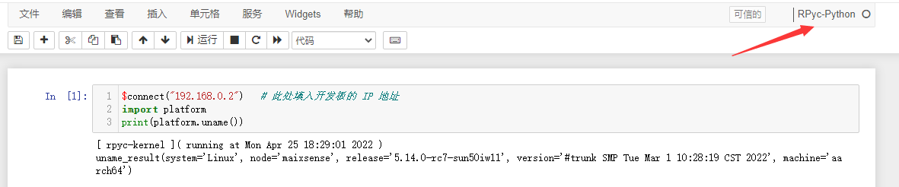

使用 MaixPy3 IDE 连接 MaixSense
| 时间 | 负责人 | 更新内容 |
|---|---|---|
| 2022年4月24日 | wonder | 增加一点细节 |
| 2022年2月28日 | Rui | 编写连接文档 |
Maixsense 仅支持通过网络连接到 maixpy3
在 MaixSense 上使用 MaixPy3 ，需要烧录内置 MaixPy3 的 armbian 系统，并且连接到网络
设置wifi
对于新烧录的系统需要先使用串口来设置wifi连接。
其中烧录系统可以参考 点我。系统用该选择带有maixpy3的armbian镜像。
使用 串口 连接板子，然后这里以 mobaxterm 这个软件为例

在「session setting」 对话框里选择【serial】，设置好波特率为115200，点击【OK】后就进到如下页面

如果提示用户名和密码的话。那么用户名和密码都是
root。
注意的是输入密码的时候是没有输入显示的，因此只管输入就行。
连接板子后可以参考 上手使用 来基本用一下。
- 如果连接软件后终端界面没有任何显示，尝试按一下回车，看看有没有信息显示出来。这是因为板子已经启动完毕，串口连接迟了。
MaixPy3 IDE 连接
准备
- 烧录好带有 MaixPy3 的 Armbian 系统
- 连接网络进行 MaixPy3更新，确保 MaixPy3 的版本大于 0.3.4。
在 linux 终端使用 ifconfig 来查看连网后的IP地址
root@maixsense:~# ifconfig #执行ifconfig
lo: flags=73<UP,LOOPBACK,RUNNING> mtu 65536
inet 127.0.0.1 netmask 255.0.0.0
inet6 ::1 prefixlen 128 scopeid 0x10<host>
loop txqueuelen 1000 (Local Loopback)
RX packets 4 bytes 200 (200.0 B)
RX errors 0 dropped 0 overruns 0 frame 0
TX packets 4 bytes 200 (200.0 B)
TX errors 0 dropped 0 overruns 0 carrier 0 collisions 0
wlan0: flags=4163<UP,BROADCAST,RUNNING,MULTICAST> mtu 1500
inet 192.168.0.2 netmask 255.255.255.0 broadcast 192.168.0.255 #这前面的 192.168.0.2 就是当前板子在网络里的IP
inet6 fe80::6919:49c9:e927:4b62 prefixlen 64 scopeid 0x20<link>
inet6 240e:3b7:3237:3230:34c:d8cc:2353:7812 prefixlen 64 scopeid 0x0<global>
ether 38:01:46:2e:77:f6 txqueuelen 1000 (Ethernet)
RX packets 5363 bytes 935435 (913.5 KiB)
RX errors 0 dropped 896 overruns 0 frame 0
TX packets 749 bytes 78267 (76.4 KiB)
TX errors 0 dropped 0 overruns 0 carrier 0 collisions 0
从上面的 wlan0 信息中我们可以发现本次 IP 地址是 192.168.0.2；
这只是一个示例，具体到每个人可能会不一样，自行更改即可
- 没有显示IP的话重新设置连接网络
连接
20220512 0.4.8 后的镜像提供了开机启动服务，不需要可以输入
sudo systemctl disable rc-local停止 /etc/rc.local 的服务。
在板子终端执行下述命令来启动板子上的远程 RPyc 服务；在电脑启动 MaixPy3 IDE，新建代码区，运行下面的连接代码。
python3 -c "import maix.mjpg;maix.mjpg.start()"
加载 NN 模型的时候容易出现内存不足的错误，如果没法继续运行可以使用 Ctrl + Z 后 reboot 重启再来。
Welcome to Armbian 21.08.0-trunk Bullseye with bleeding edge Linux 5.14.0-rc7-sun50iw11
No end-user support: built from trunk & unsupported (bullseye) userspace!
System load: 118% Up time: 3 min
Memory usage: 43% of 231M Zram usage: 3% of 115M IP: 192.168.0.222
CPU temp: 64°C Usage of /: 80% of 2.9G
[ 0 security updates available, 34 updates total: apt upgrade ]
Last check: 2022-05-12 06:38
Last login: Thu May 12 07:12:30 UTC 2022 on ttyS0
root@maixsense:~# root
-bash: root: command not found
root@maixsense:~# python3 -c "import maix.mjpg;maix.mjpg.start()"
Dict mode[TEST INFO] AIPU load graph successfully.
[libmaix_nn] -- start alloction tensor buffers
- 电脑在 IDE 中新建代码区并执行
$connect("192.168.0.2") # 此处填入开发板本次的 IP 地址
import platform
print(platform.uname())
稍微等一会，然后运行结果如下

- 注意右上角应该是RPyc
启动 MAixpy3 IDE 的时候，会打开一个 adb 终端窗口。由于我们是用网络连接且运行运行相关代码的，因此可以直接关闭它
相关使用方法可以参考使用 MaixPy3 IDE 连接 MaixII-Dock,其中的如何运行代码和首次尝试都可以参考。
另外注意因为板子是使用无线网络连接的IDE，所以每次首次运行时需要指定IP。
开机自启
目前 R329 镜像是 armbian linux 系统。
用户可以自行搜索配置linux开机脚本方式来启动想要的脚本。